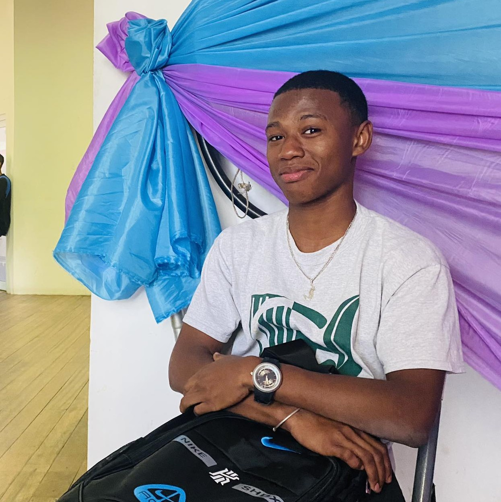

Ravomanana Brandon Fidelin.
I'm 20, Full Stack Developer. I'm a third year CS student at ISPM University from Madagascar. I wish my profil 'll interest you and enjoy the visit.

I'm 20, Full Stack Developer. I'm a third year CS student at ISPM University from Madagascar. I wish my profil 'll interest you and enjoy the visit.